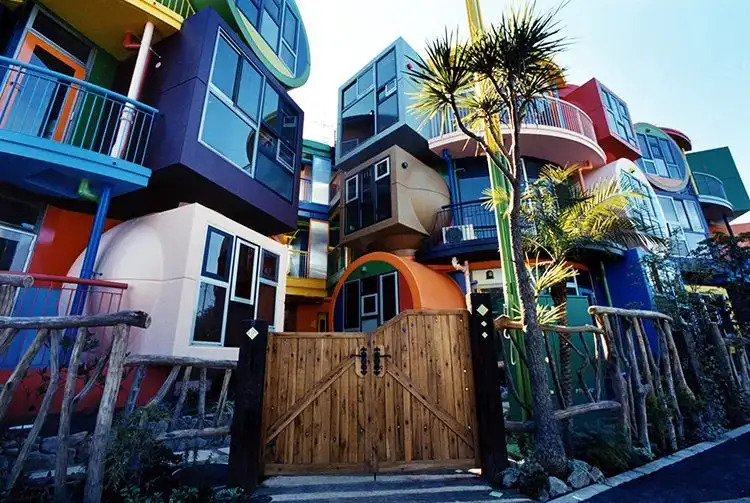

Mitaka, Tokyo: things to do, food and stays
Mitaka · Tokyo
Mitaka
Highlighted on the Tokyo map.

Sights

Dining
Sakita
さき田

Seafood restaurant in Mitaka, Tokyo.
Ganso Stamina Manten Ramen Suzuki
元祖スタミナ満点らーめん すず鬼

Noodle restaurant in Mitaka, Tokyo.
Torikoku Chuka Suzuki
鶏こく中華 すず喜

Noodle restaurant in Mitaka, Tokyo.
Chuka Soba Mitaka
中華そば みたか

Noodle restaurant in Mitaka, Tokyo.
Shichijo
七條

European restaurant in Mitaka, Tokyo.
Wantanmen no Mangetsu Mitaka ten
ワンタンメンの満月 三鷹店

Noodle restaurant in Mitaka, Tokyo.
Ramen Bunzo
らーめん 文蔵

Noodle restaurant in Mitaka, Tokyo.
Chuka Soba Himawari
中華そば 向日葵

Noodle restaurant in Mitaka, Tokyo.
Nikumen Nikumeshi Suzuki
肉めん 肉めし すず気

Noodle restaurant in Mitaka, Tokyo.
Patisserie Cote du bois
パティスリー コテ デュ ボワ

Cafe in Mitaka, Tokyo.
Virbius
ウィルビウス

European restaurant in Mitaka, Tokyo.
Cafe Mugiwara Boshi
カフェ麦わらぼうし

Cafe in Mitaka, Tokyo.
Kamado Yaki NIKUYOROZU Reservation
かまど焼 NIKUYOROZU

Meat restaurant in Mitaka, Tokyo.
Kizunaya Mitaka oosawa ten
皇綱家 三鷹大沢店

Noodle restaurant in Mitaka, Tokyo.
Bakery Midmost
ベーカリーミッドモースト

Sweets and bakery shop in Mitaka, Tokyo.
siro

Sweets and bakery shop in Mitaka, Tokyo.
Menya YAMATO
麺屋YAMATO

Noodle restaurant in Mitaka, Tokyo.
YOKOHAMA Chuka Soba Kamiyama
YOKOHAMA中華そば かみ山

Chinese or Asian restaurant in Mitaka, Tokyo.
piwang
ピワン

Japanese restaurant in Mitaka, Tokyo.
Pasta Wazaya
PASTAわざや

European restaurant in Mitaka, Tokyo.
Musashi Ya Mitaka ten
武蔵家 三鷹店

Noodle restaurant in Mitaka, Tokyo.
Saint Denis Cafe

Cafe in Mitaka, Tokyo.
Ichifuji
cafe イチフジ

Cafe in Mitaka, Tokyo.
Pepa Cafe Forest
ペパカフェ・フォレスト

Chinese or Asian restaurant in Mitaka, Tokyo.
Gyoza no Harbin
餃子のハルピン

Chinese or Asian restaurant in Mitaka, Tokyo.
Glover Tei
グラバー亭

Noodle restaurant in Mitaka, Tokyo.
Ganso Harbin
元祖ハルピン

Chinese or Asian restaurant in Mitaka, Tokyo.
Haifamiria
ハイファミリア

Cafe in Mitaka, Tokyo.
Wagashi Taiyaki Sueki
和菓子 たいやき すえき

Sweets and bakery shop in Mitaka, Tokyo.
Fukuya
福家

Meat restaurant in Mitaka, Tokyo.
sononi
ソノニ

Cafe in Mitaka, Tokyo.
Takitaro
たきたろう

Noodle restaurant in Mitaka, Tokyo.
fujiyacoffee

Cafe in Mitaka, Tokyo.
Coffee Lisbon
リスボン

Cafe in Mitaka, Tokyo.
Chuka Soba Shimorenjaku
中華そば 下連雀

Noodle restaurant in Mitaka, Tokyo.
LA CRÊPERIE

Sweets and bakery shop in Mitaka, Tokyo.